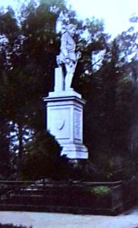

|
Monument
|
|  |
| Statue of Pedro de Valdivia, Parque de Santa Lucía, Santiago |
Welcome to the guided tour "monument", which is about to depart! Please use the "back" and "forward" buttons below to take you through this part of the exhibition. Click on the images if you want to find out more about an exhibit, or if you want to see a larger image of it.
Towards the end of the nineteenth century, the construction of historical canons entered the agenda of ruling elites in Argentina, Brazil and Chile. The arrival of immigrant masses from overseas, many of whom did not seem in a hurry to take out local citizenship, as well as the more and more vocal demands for political and cultural participation from an emergent local middle class, seemed to signal the need to educate the populace in a set of core values of the nation embodied in the heroic deeds of its founders of whom the Creole elites had descended. At the same time as the inclusion of historical subject matter and patriotic rituals in the curriculum of public education was projected by historians and intellectuals such as Joaquín V. González in Argentina, Diego Barros Arana in Chile, or José Veríssimo in Brazil, then, an even more comprehensive urban pedagogics was devised, which would turn the (capital) city into a space saturated with (national) historical memories, highlighted in street names, commemorative plates, and, most of all, monuments in honour of a gallery of próceres, whose location and hierarchy was the subject of ardent debates. Santiago´s mayor, the historian Benjamín Vicuña Mackenna, pioneered many of these processes when, between 1872 and 1873, he initiated the transformation of Santa Lucía hill –a barren rock in the centre of the city– into an urban park containing monuments to its colonial past, such as the statue of the city´s founder, the Spanish conqueror and first governor of Chile, Pedro de Valdivia.
|
[ Back to index | Forward ] |